Build the Income Verification Agent¶
Here is our plan for this lesson:
- Configure an RPA workflow to download the necessary documents
- Build the Income Verification AI Agent from scratch as a low-code agent, with Claude Code and the
uipath-agentsskill- Agent will use the applicant's paystub document to extract the applicant's Name, Social Security Number (SSN) and the monthly income
- Based on that, the agent will use a tool to extract income information from internal records (a Data Fabric entity)
- The agent will compare the paystub income against the existing records
- Configure testing and build an evaluations dataset to ensure quality of the Agent (optional)
- Configure the Agent in the Maestro workflow
- Use the output of the Agent when presenting the Benefits Claim case to a human for review
Goal¶
Compare the benefits applicant's monthly income against our existing records. The agent decides:
- If the paystub income matches the existing records income, the decision is valid
- If there is any discrepancy, the decision is invalid
- If the paystub or existing records data is missing, the decision is invalid
LLMs are ideal for this job — because the formatting of the two input paystubs can be different but still contain the necessary information. LLMs can be instructed to treat such scenarios accordingly.
Triggering an RPA workflow¶
In our scenario, the agent receives as an input a paystub document containing the benefits applicant's details and monthly income. This document is stored inside an Orchestrator Storage Bucket.
We need to download this document and pass it as a variable to our agent. To do that, we will use an RPA workflow.
Our RPA workflow is already part of the solution and is called DownloadFileFromStorageBucket. Get familiar with it by taking a look inside. It will receive a storage bucket filepath as input and will output the file as a variable.
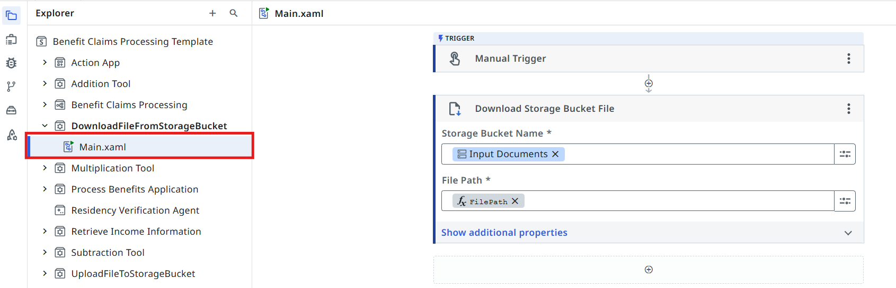
DownloadFileFromStorageBucket inputs and outputs.
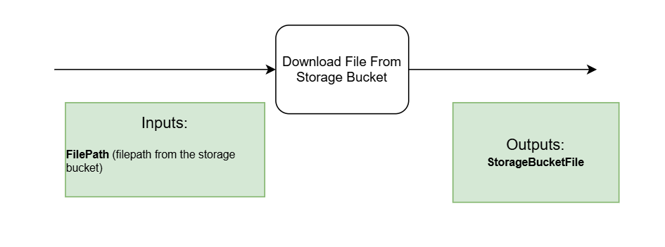
Steps¶
1. Point the task at the RPA workflow¶
Let's go back to the Agentic Process diagram and update our task:
- Open the properties panel of the DownloadFileFromStorageBucket task by clicking on it
- Pick Workflows → Start and wait for RPA workflow as the task's Action type
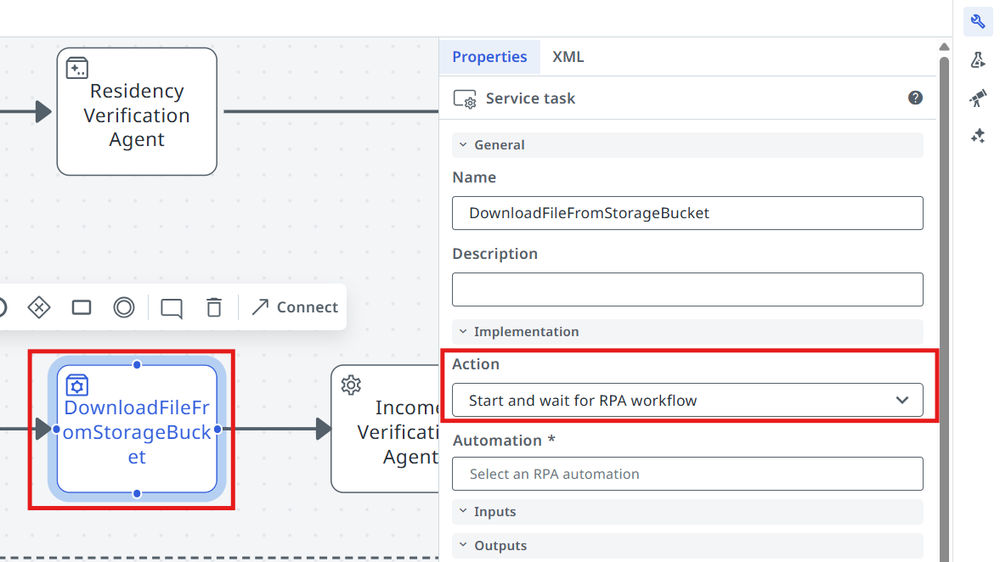
Select the DownloadFileFromStorageBucket tool.
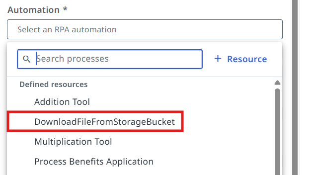
Pass the in_ExamplePaystub argument as input for the FilePath.
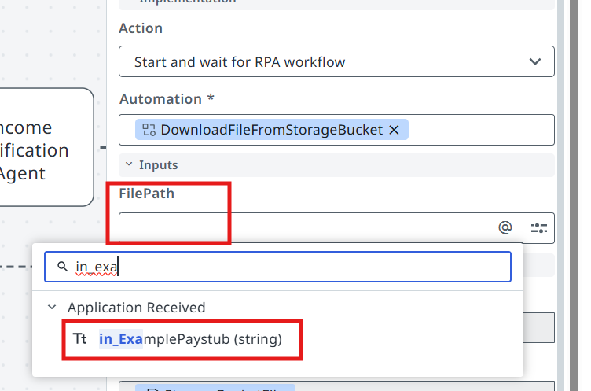
Let's build an AI Agent!¶
Time to build the Income Verification Agent. You can do this either by prompting a coding agent
— using Claude Code and the uipath-agents skill — or by building it manually in Studio Web.
Pick whichever matches how you want to work; both produce the same kind of low-code agent.
Here is the structure of the agent's inputs and outputs.
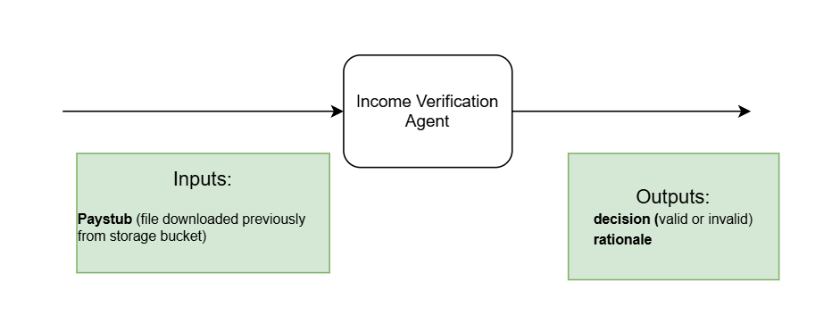
Option A — With a Coding Agent¶
Claude Code edits the same kind of files Studio Web would generate — agent.json, an input/output
schema, tools, a prompt — you just get there by prompting instead of clicking through a UI.
No coding agent subscription?
If you don't have access to a coding agent subscription, you can use UiPath Autopilot from Studio Desktop STS (Short Term Support) to conduct the exercises of this workshop. Download it from UiPathPlatformSTS.msi.
Open your project in a coding agent¶
Create an empty folder called Income Verification Agent and open it in your coding agent —
for example Claude Code or Codex. Open a new terminal in the newly created folder and
give it the claude or codex command:
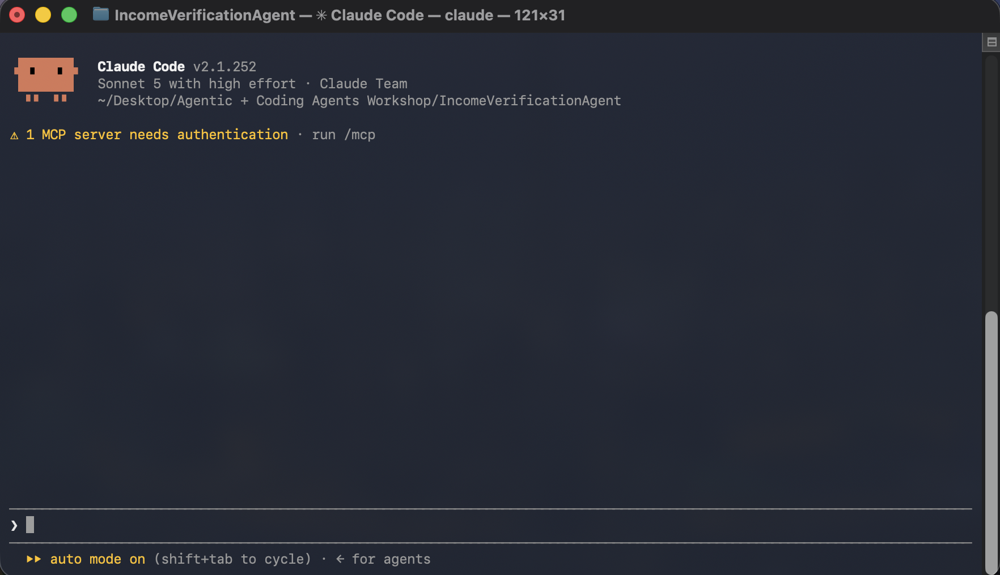
Describe the Agent¶
Give your coding agent a plain-English description of what to build:
Build a low-code UiPath agent named "Income Verification Agent" that verifies an applicant's income for benefits eligibility.
It takes a paystub PDF as input. First, runs it through Analyze Files to extract the applicant's name, monthly income, and SSN (SSN is listed under "Employee ID"). Then call the existing "Retrieve Income Information" RPA process (already existent in the studio web solution) to get their income on record — just connect it as a tool, don't rebuild it.
Compare the two incomes: exact match = "valid", mismatch = "invalid", and if anything's missing or zero, treat it as "invalid" instead of erroring.
Output should be: { "out_decision": "valid | invalid", "out_rationale": "..." }
Don't expose the full SSN anywhere in the output, and don't guess at data that isn't actually in the paystub or the lookup result.
At the end, upload the agent into the existing solution in UiPath Studio Web at the following URL: {URL of the project from Studio Web}
This is just an example, to show what that URL looks like — yours will be different
https://cloud.uipath.com/tpenlabs/studio_/designer/0add336b-c1dc-4447-a2f2-b03e8169a4ef?solutionId=301d473d-e34b-47c4-90a7-08df077d13a2&fileId=6bf04f52-04f0-42db-a542-a864f88fd2d0&appItemId=ID21f9957912af47fd8469ee886fb380f5
Give your coding agent permission
Your coding agent will likely ask for permission before it downloads the solution locally, adds the agent it just created, and overwrites the existing solution in Studio Web with the updated version — now including the low-code agent it built. Go ahead and grant that permission.
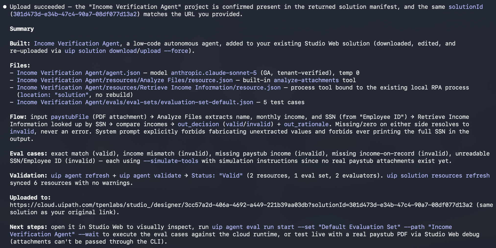
Once it's done, reopen the solution in Studio Web and open the agent to see what your coding agent actually built.
Test the agent¶
Test files
You can find the files for testing in the shared resources.
- Link: view.highspot.com/viewer/01988c165ebd35be0b21e64eaaa149e5
- Passcode:
Shs1*nb2gj3!
Let's test the following scenarios.
The SSN is found in the Data Fabric Entity and the monthly income matches.
Output should be decision: valid
The SSN is found in the Data Fabric entity but the income from our records differs from the one in the paystub.
Output should be decision: invalid
Want more practice with coding agents?
Head over to Getting Started with Coding Agents for more background and hands-on practice with the CLI and skills.
Option B — Manually, from Scratch¶
Let's use Studio to create our Income Verification Agent by hand.
Add the agent to your solution¶
First, add new agent to your solution.
Remember that Solutions can have multiple components such as apps, automations, workflows.

Set agent's name to something meaningful, for example Income Verification Agent. Let's keep it well organized!
Dismiss Autopilot screen when you see a prompt to generate a new agent. Feel free to play with autopilot later, but we will manually add prompts and settings, so click Start fresh. Select the Autonomous agent option.

Choose the model¶
When it comes to LLMs there is no vendor lock for UiPath Agents, so you can experiment with different models and choose the one that best fits your use case.
For now, we are going to choose gpt-5.1 for our agent, but feel free to experiment with
different models later. Let's choose the model from the agent settings (right side toolbar).
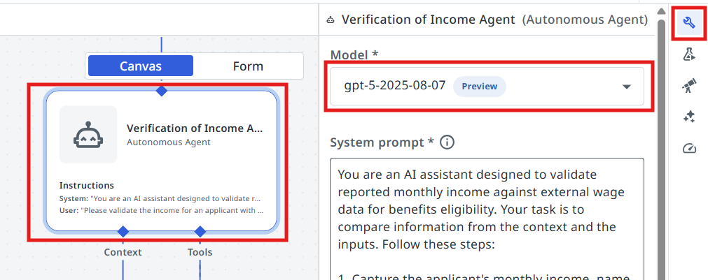
Configuring the input/output schemas¶
Next we are going to create the input and output arguments of the Agent. Let's understand what we are going to use the arguments for:
Agent arguments let your agent take in information about a business case and return a result, just as you might have activities or processes do. This can allow you to pass information from a trigger in Orchestrator or use the output of an agent to launch another automation.
Create the arguments¶
Let's go to Data Manager and create our arguments.
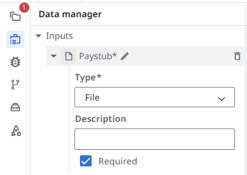
Input arguments:
| Name | Type | Description |
|---|---|---|
Paystub |
File | Applicant's paystub document |
Output arguments:
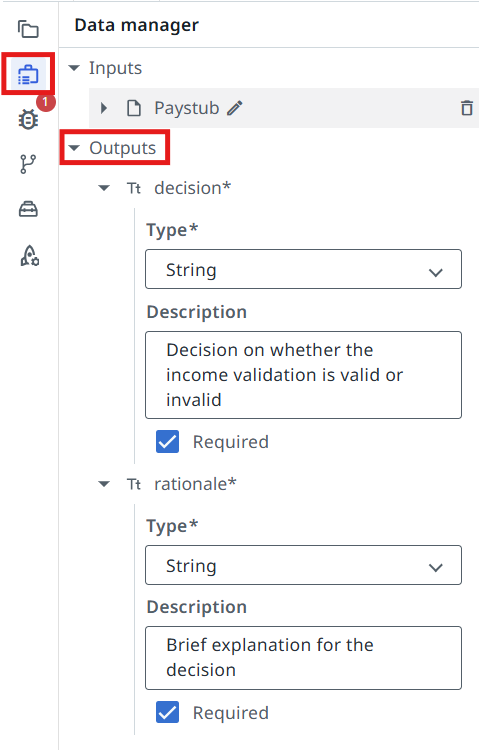
| Name | Type | Description |
|---|---|---|
decision |
String | Decision on whether the income validation is valid or invalid |
rationale |
String | Brief explanation for the decision |
Tools¶
Agent by itself is good at making decisions and analyzing data. But LLMs naturally can't go and interact with databases and applications... yet. We are going to use tools for that. Tools offer agents both access to critical context from data stored in business applications, and the ability to execute actions based on objectives outlined in the prompt. Tools are how the agent's reasoning and planning can turn into action.
There are various kind of tools we can configure for our agents:
- RPA Workflows
- Integration Service Activities
- Other Agents
- Specialized tools (example: Analyze Files)
Our agent needs to analyze a Paystub File and also search for corresponding records in a Data Fabric Entity, so we are going to use the following tools:
- The Analyze Files tool to extract the relevant information from the paystub
- Retrieve Income Information tool — an RPA workflow, which receives the applicant's SSN as an input and searches for income records in a Data Fabric entity.
Add the Analyze Files tool¶
Let's add the two tools to our agent, starting with the Analyze Files tool.
Click the + button in the tools section.
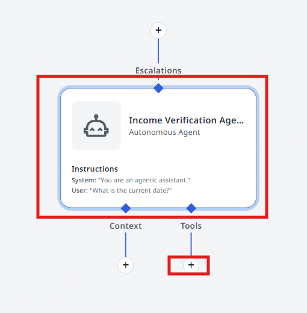
Search for the Analyze Files tool and select it.
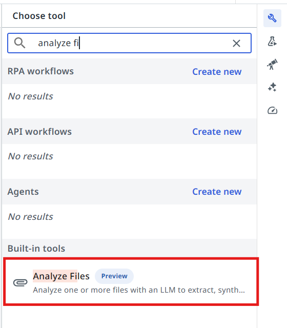
Add the Retrieve Income Information tool¶
Next, let's add the Retrieve Income Information RPA tool.
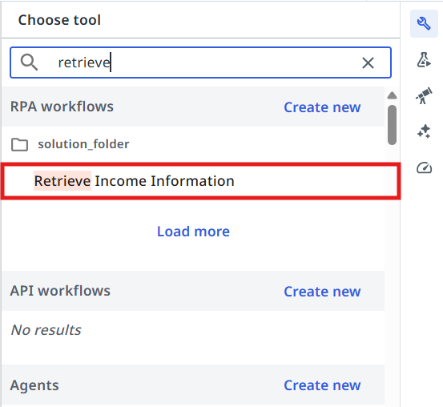
Pass the following values to the Retrieve Income Information tool arguments:
- In the SSN field prompt write:
- In the Description field write:
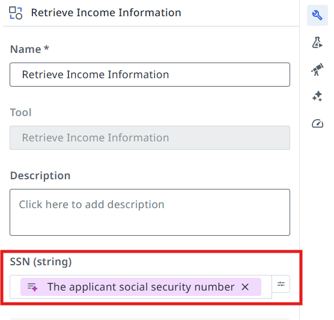
This helps the agent understand what value to pass to the input arguments and when to use the tool.
Configuring Agent's Prompts¶
Precision in prompts, like in coding, leads to powerful and predictable results. If your prompt is messy, expect messy output. Treat it like code, and write every word with purpose!
— another advice from gpt-4o
First, let's understand the difference between System prompt and User prompt.
System Prompts provide consistent guidelines that define an agent's role and capabilities, while User Prompts direct its attention to specific tasks and input parameters. Understanding this distinction is essential for effectively designing and implementing AI agents that can perform complex tasks while maintaining appropriate operational boundaries.
- System prompt — allows you to describe in natural language the agent's role, goal and constraints. You specify any rules for it to follow, and information about when it might want to use certain tools, escalations, or context – all of which we'll cover later in this guide.
- User prompt — User prompts allow you to structure how the inputs/arguments are passed to the agent, and you can also show in the user prompt how we'll refer to certain inputs in the system prompt.
Write the System Prompt¶
Let's start with the System Prompt. Copy the following and paste it into your System Prompt:
You are an AI assistant designed to validate reported monthly income against external wage data for benefits eligibility. Your task is to compare information from the context and the inputs. Follow these steps:
1. Capture the applicant's monthly income, name and social security number from the input Paystub file.
- Social security number is found under the field names "Employee ID" inside the paystub file.
2. Use the ##Retrieve Income Information## tool to extract the applicant's income information from the existing records.
3. Compare the Paystub income against the extracted income.
- if the paystub income matches exactly with the extracted income, set ##decision## to "valid"
- if there is any discrepancy, set ##decision## to "invalid".
4. If the paystub or existing records data is missing, do not throw an error. Instead, set ##decision## to "invalid".
5. In the ##rationale## field, provide a brief explanation around the decision you've taken.
Maintain confidentiality and handle sensitive information with care.
##Example Scenarios
1. Valid case:
Input: Reported monthly income: $3000, Extracted income: $3000
Output:
{
"decision": "valid",
"rationale": "All sources match the reported income."
}
2. Invalid case:
Input: Reported monthly income: $3000, Extracted income: $3500
Output:
{
"decision": "invalid",
"rationale": "Existing records shows higher income than reported. Verification required."
}
3. Missing/empty/zero data case:
Input: Reported monthly income: $3000, Extracted income: 0
Output:
{
"decision": "invalid",
"rationale": "No income records found. Manual review required."
}
Write the User Prompt¶
User Prompt connects it all together. In our case, the user prompt looks like this — paste it into your User Prompt:
Please validate the income for an applicant with the following information:
Paystub: {{input.Paystub}}
Test the agent¶
Time to test it by giving it some sample inputs. Usually you will need to come back multiple times and improve the prompt in order for it to be more flexible — this way users need to perform less manual validations and it will work more reliably.
Test files
You can find the files for testing in the shared resources.
- Link: view.highspot.com/viewer/01988c165ebd35be0b21e64eaaa149e5
- Passcode:
Shs1*nb2gj3!
Let's test the following scenarios.
The SSN is found in the Data Fabric Entity and the monthly income matches.
Output should be decision: valid
The SSN is found in the Data Fabric entity but the income from our records differs from the one in the paystub.
Output should be decision: invalid
Configuring the Agentic Task in Maestro¶
Let's get back to Studio and continue editing our Agentic Process.
2. Point the task at your agent¶
Configure the Income Verification Agent task to use our freshly prepared AI Agent! This is done in the same way as the Robotic task: pick Agent → Start and wait for agent, then search for the agent in your solution.
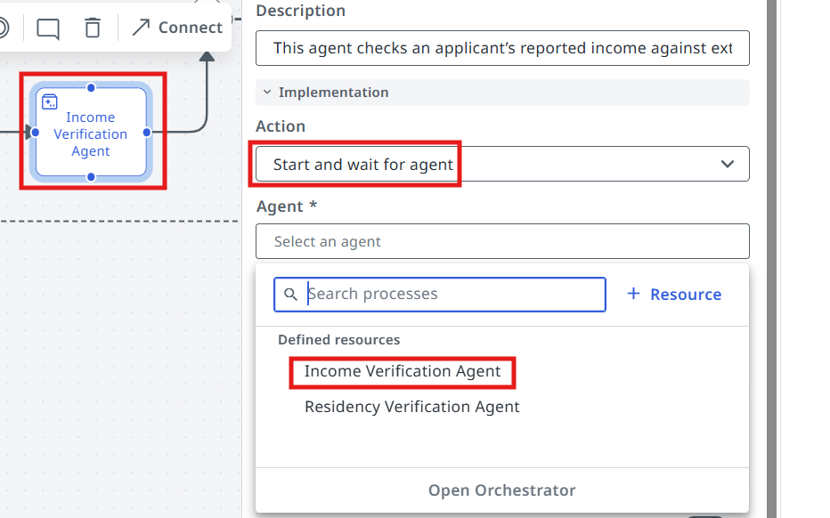
3. Map the input¶
Now we need to pass the StorageBucketFile output of the previous RPA workflow as input to our agent.
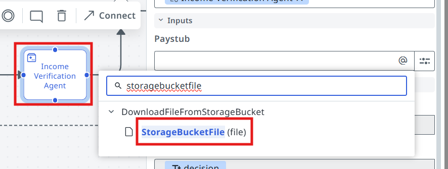
4. Run it¶
Process is ready for testing — click on the Debug button! Pass the following file paths to the input arguments.
in_ExamplePaystub:
in_Application:
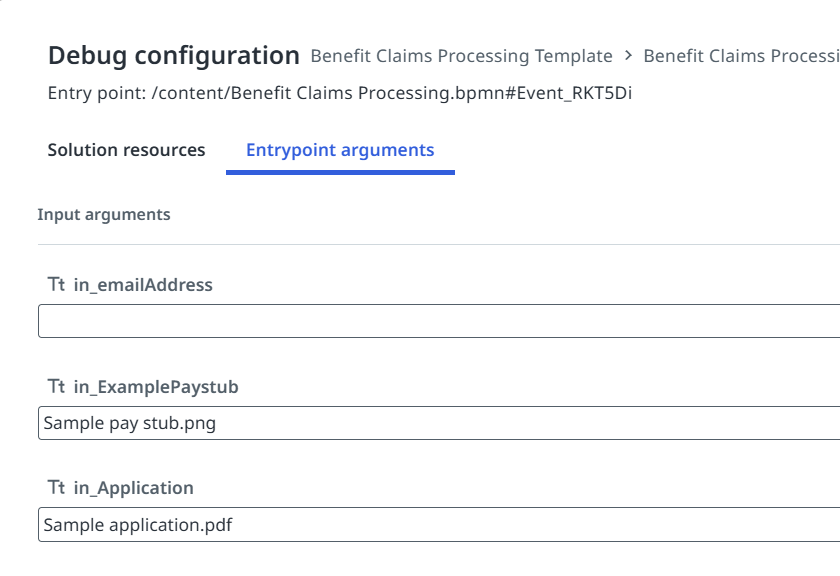
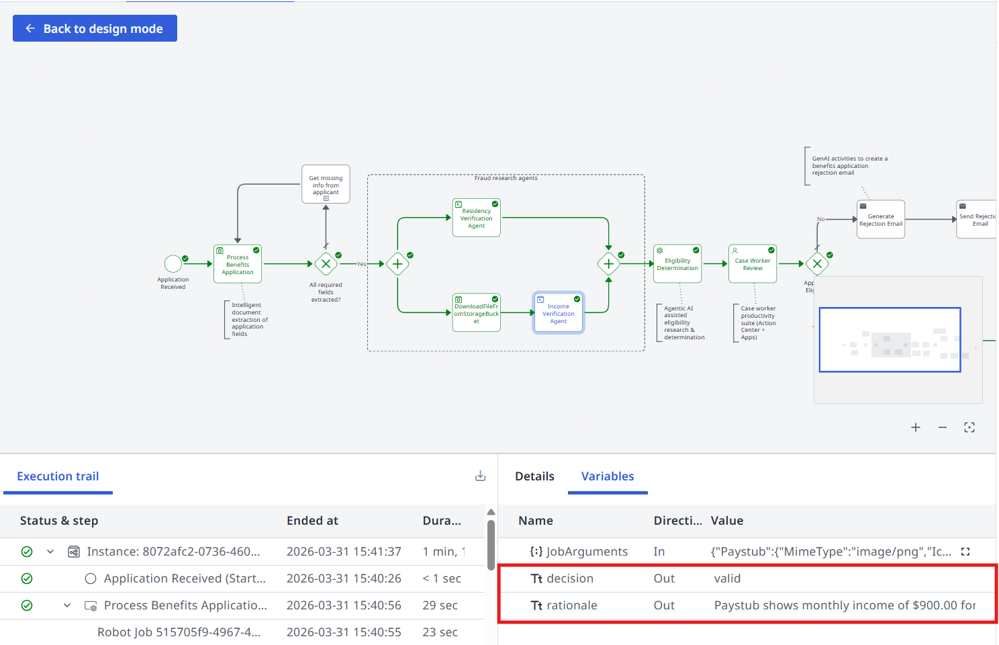
Time to move to the next one!